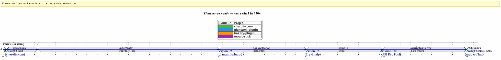
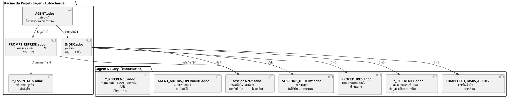

ควบคุม AI Agent ด้วย AsciiDoc: กลยุทธ์ Eager/Lazy ของฉันสำหรับเซสชัน Opencode โดยไม่มีการรั่วไหลของบริบท (Context Leak)
เผยแพร่เมื่อ 24 April 2026
สรุป
เมื่อทำงานกับเอเจนต์ AI อย่าง Opencode ในโปรเจกต์ที่ซับซ้อนซึ่งดำเนินไปหลายเซสชัน เราจะเผชิญกับปัญหาพื้นฐานประการหนึ่ง:การรั่วไหลของบริบท. เอเจนต์ไม่จดจำเซสชันก่อนหน้า ทุกสิ่งที่อธิบายให้เอเจนต์ฟัง — สถาปัตยกรรม ธรรมเนียมปฏิบัติ สถานะของแบ็กлог — ล้วนสูญหาย การสร้างบริบทนี้ขึ้นใหม่ในทุกเซสชันมีต้นทุนสูง ช้า และก่อให้เกิดข้อผิดพลาด
บทความนี้นำเสนอกลยุทธ์แบบช่างฝีมือที่ฉันสร้างขึ้นเพื่อแก้ปัญหานี้: ระบบการกำกับดูแลที่คงอยู่ต่อเนื่องซึ่งอิงจากไฟล์ AsciiDoc พร้อมด้วยการแบ่งเป็นสองขั้วแบบประเมินทันที/แบบประเมินเมื่อจำเป็นเพื่อเพิ่มประสิทธิภาพการใช้โทเค็นบริบท และ…ขั้นตอนการสิ้นสุดเซสชันที่ต้องดำเนินการอย่างหลีกเลี่ยงไม่ได้เพื่อรับประกันความต่อเนื่อง
ฉาก: วันจันทร์ที่ 21 เมษายน 9:00 น.
ฉันเปิด Opencode ใหม่เพื่อทำปลั๊กอิน Gradle ของฉันต่อ`plantuml-plugin`เมื่อคืนนี้ ฉันใช้เวลาสามชั่วโมงพูดคุยกับเอเจนต์ด้านสถาปัตยกรรมของพูลคีย์ API — การหมุนเวียนแบบ round-robin การจัดการโควตา การสลับไปใช้ตัวสำรองอัตโนมัติ เช้านี้ เอเจนต์มองฉันด้วยดวงตาแบบปลาทอง
Please provide the French text you’d like me to translate into Thai. สวัสดีครับ ผมเป็นผู้ช่วย Opencode ของคุณ วันนี้ผมสามารถช่วยคุณได้อย่างไร? __
ไม่ต้องมี — อ้อ ใช่ พูลคีย์ API เรามาถึงโครงสร้าง YAML แล้ว ไม่ต้องมี — ระวัง`PlantumlManager`เป็นออบเจ็กต์ Kotlin แบบซิงเกิลตัน ไม่ใช่คลาส ไม่มี — ไม่ เมื่อวานเราตัดสินใจว่า`SyntaxValidationResult`ยังคงมี sealed class แบบ nested อยู่ใน`PlantumlService`.
ทุกอย่างต้องทำใหม่หมด หรือพูดให้ถูกคือ ทุกอย่างต้องอธิบายใหม่หมด ฉันจะต้องใช้ยี่สิบนาทีแรกของเซสชันเพื่อประกอบบริบทขึ้นมาใหม่ที่เอเจนต์เคยได้รับมาแล้วเมื่อวาน ยี่สิบนาทีที่โทเคนถูกเผาทิ้งไป ยี่สิบนาทีที่ฉันควรจะได้เขียนโค้ด แต่กลับต้องมาทำหน้าที่สอนแบบเลี่ยงไม่ได้
นี่ไม่ใช่บั๊กของ Opencode นี่คือธรรมชาติของ LLM แบบสนทนาเอง: ระหว่างสองเซสชัน ความจำใช้งานคือถูกลบเลือนไปทั้งหมด. เอเจนต์ไม่จำภารกิจก่อนหน้า การตัดสินใจที่ได้ทำไป กับดักที่ระบุไว้ หรือโค้ดที่เราเขียนด้วยกัน
ฉันเคยเจอเรื่องนี้มาหลายสิบครั้งแล้ว ในสี่โปรเจกต์ที่ทำพร้อมกัน ด้วยเซสชันที่ต่อเนื่องกันเป็นเวลาหลายสัปดาห์ ฉันคำนวณแล้วว่า โดยเฉลี่ยแล้ว30 ถึง 40% ของเวลาในเซสชันได้อุทิศให้กับการปรับบริบทใหม่ของเอเจนต์ ในเซสชันที่ 87 ของโครงการ`plantuml-plugin`, ฉันทนไม่ไหวแล้ว ฉันไม่สามารถปล่อยให้ตัวเองต้องอธิบายซ้ำเป็นครั้งที่สิบอีกต่อไปว่า`AttemptEntry`เป็น data class ระดับบนสุดใน`DiagramProcessor.kt`.
ฉันต้องการระบบ ไม่ใช่แฮ็ก แต่เป็นการกำกับดูแลที่แท้จริง
ปฐมบท: จากความโกลาหลสู่ระเบียบวิธี
เซสชันแรก : ยุคแห่งความมืด
โปรเจกต์แรกของฉันกับ Opencode,plantuml-plugin, เริ่มต้นขึ้นโดยไม่มีการกำกับดูแลใด ๆ ฉันถามคำถาม เอเจนต์ตอบ เราวนทำซ้ำ เซสชันจบลง และวันถัดไปก็เริ่มต้นใหม่จากศูนย์ นั่นคือเซสชัน 1 จากนั้น 2 แล้วก็ 3… จนถึงเซสชัน 62 ที่ฉันตระหนักว่าฉันเสียเวลาสะสมหลายชั่วโมงไปกับการอธิบายสถาปัตยกรรมเดิมซ้ำแล้วซ้ำอีก
ในเซสชันที่ 62 ตัวเลขอยู่ตรงนั้นแล้ว:การทดสอบหน่วย 198 รายการผ่าน, การทดสอบเชิงฟังก์ชัน 42 รายการผ่านการตรวจสอบแล้ว, ปลั๊กอินทำงานได้ แต่ต้นทุนทางปัญญาเกินรับไหว ทุกเซสชันใหม่เริ่มต้นด้วยบทพูดคนเดียวยี่สิบนาทีเกี่ยวกับโครงสร้างโปรเจกต์
ตอนของ site.yml ที่ถูกทำลาย (เซสชัน 2, bakery-plugin)
วิธีการนี้ก็เกิดขึ้นจากหายนะเช่นกัน ในโครงการ`bakery-gradle`, ในเซสชันที่ 2 ฉันขอให้เอเจนต์แก้ไขไฟล์`site.yml`. เอเจนต์ โดยไม่ตรวจสอบว่าไฟล์ได้รับการจัดเวอร์ชันหรือไม่ ทำการ`Write`ที่สมบูรณ์ซึ่งเขียนทับเนื้อหา ผลลัพธ์: โทเค็นจริง (คีย์ API Firebase, ข้อมูลลับสำหรับการดีพลอย) ถูกแทนที่ด้วยตัวยึดตำแหน่งปลอม ไฟล์นี้ไม่ได้อยู่ใน git — มันอยู่ใน`.gitignore`เพื่อปกป้องความลับ
โดยไม่มีการสำรองข้อมูล โดยไม่`git restore`เป็นไปได้ ฉันติดขัด ฉันจำเป็นต้องสร้างไฟล์กำหนดค่าขึ้นใหม่ด้วยตนเอง ค้นหาโทเค็นในตัวจัดการรหัสผ่านของฉัน แล้วนำทุกอย่างกลับมาต่อกัน
ความหงุดหงิดนี้เองที่เป็นจุดกำเนิดของ…กฎสัมบูรณ์ 1bPlease provide the French text you’d like me to translate — your message contains the instructions but no source text after the colon.
Please provide the French text you’d like me to translate into Thai. ห้ามทับเด็ดขาดไฟล์ config ที่มี`Write`สมบูรณ์เมื่อ`Edit`เพียงบางส่วนก็เพียงพอห้ามแทนที่โดยเด็ดขาดค่าที่ละเอียดอ่อนด้วยค่าหลอกตรวจสอบ git check-ignore และ `git ls-filesก่อนการแก้ไขใด ๆ __
กฎข้อนี้ ซึ่งปัจจุบันถูกจารึกไว้อย่างมั่นคงในไฟล์ทั้งหมดของฉัน`AGENT.adoc` et `INDEX.adoc`ในสี่โปรเจกต์ เกิดจากข้อผิดพลาดจริงที่ทำให้ฉันต้องเสียเวลาทำงานด้วยมือหนึ่งชั่วโมง
การย้าย Markdown → AsciiDoc (เซสชัน 1, cheroliv.com)
วันที่ 25 เมษายน 2026 บน`cheroliv.com`, ฉันตัดสินใจอย่างเด็ดขาด: แปลงการกำกับดูแลทั้งหมดจาก Markdown ไปเป็น AsciiDoc นี่ไม่ใช่เรื่องของความสวยงาม แต่เป็นเรื่องของการใช้งาน AsciiDoc มีโครงสร้างเชิงความหมายที่ LLM อ่านได้ดีกว่า: ส่วนแบบลำดับชั้น ตารางแบบมีชนิด คำเตือน (NOTE, WARNING, CAUTION), แอตทริบิวต์ของเอกสารที่เครื่องอ่านได้
เซสชัน 1 ของ`cheroliv.com`ทำให้โครงสร้างเป็นทางการ:
-
การแปลงของ`AGENTS.md` en
AGENT.adoc -
การสร้างเอเจนต์เฉพาะทาง:`CODER.adoc`,
SCRUM_MASTER.adoc,PLANTUML_DESIGNER.adoc -
การสร้างโครงสร้าง Eager/Lazy :`INDEX.adoc`,
SESSIONS_HISTORY.adoc,AGENT_SESSION_MANAGER.adoc,SESSION_CHECKLIST.adoc,PROCEDURES.adoc
คอมมิตเดียว:`90975e9 refactor: migrate agent governance from Markdown to AsciiDoc`. และเว็บไซต์ยังคงทำงานต่อไป

ไทม์ไลน์ข้างต้นแสดงให้เห็นความคืบหน้าจริง จุดพลิกผันคือเซสชันที่ 87: นั่นคือจุดที่ความหงุดหงิดจากการกำหนดบริบทใหม่ซ้ำ ๆ เกินเกณฑ์ความอดทน และวิธี Eager/Lazy เลิกเป็นเพียงแนวคิดแล้วกลายเป็นสิ่งที่ต้องทำ
กลยุทธ์: เจาะลึก Eager/Lazy
ปรัชญา: แคชคอมพิวเตอร์ประยุกต์กับการรู้คิด
แนวทางของฉันได้รับแรงบันดาลใจโดยตรงจากการจัดการแคชคอมพิวเตอร์ ทุกสิ่งที่สำคัญและใช้บ่อยต้องสามารถเข้าถึงได้ทันที (กระตือรือร้น). ทุกสิ่งที่เป็นตามบริบทหรือมีขนาดใหญ่ต้องโหลดตามคำขอ (ขี้เกียจ).
Eager (แดชบอร์ด) |
Lazy (คู่มือเจ้าของ) |
ขนาด |
น้อยกว่า 100 บรรทัด, น้อยกว่า 10k โทเค็น |
ไม่จำกัด, ละเอียด |
กำลังโหลด |
อัตโนมัติ เมื่อเริ่มต้นเซสชัน |
ตามคำขอของตัวแทน |
เนื้อหา |
กฎเด็ดขาด, ภารกิจปัจจุบัน, สถานะวิกฤต |
คลังเก็บเซสชัน ประวัติทั้งหมด ขั้นตอนโดยละเอียด เอกสารอ้างอิงทางเทคนิค |
บทบาท |
ชี้นำตัวแทนทันที |
ตอบคำถามเกี่ยวกับบริบทเชิงลึก |
ไฟล์ Eager: แดชบอร์ด
ไฟล์เหล่านี้อยู่ที่รากของแต่ละโปรเจกต์ และถูกโหลดโดยอัตโนมัติโดยเอเจนต์เมื่อเริ่มต้นแต่ละเซสชัน พวกมันประกอบเป็นแดชบอร์ด-- ข้อมูลสำคัญที่เข้าถึงได้ทันที

AGENT.adoc-- ไฟล์หลัก บน`cheroliv.com`, มี 200 บรรทัดและประกอบด้วย:
-
กฎเด็ดขาดของโปรเจกต์ (ห้ามคอมมิตโดยไม่ได้รับอนุญาต, ห้าม`rm`โดยไม่มีการยืนยัน)
-
โครงสร้างโปรเจกต์และแนวปฏิบัติการเขียนโค้ด
-
คำสั่งที่จำเป็น (
./gradlew serve,./gradlew test) -
เอปิกและแบ็กлогผลิตภัณฑ์ (ยูสเซอร์สตอรีที่จัดลำดับความสำคัญแล้ว)
-
เกณฑ์คุณภาพแบบข้ามสายงาน (การเข้าถึงได้ การรองรับขนาดหน้าจอ ความเข้ากันได้)
บน`bakery-plugin`, กฎข้อ 0 นั้นแตกต่าง:./gradlew -q publishToMavenLocal` จำเป็นหลังจากแก้ไขซอร์สโค้ดทุกครั้ง. เพราะการทดสอบปลั๊กอินโดยไม่เผยแพร่ JAR โลคอลอีกครั้งทำให้ฉันเสียเวลาหนึ่งชั่วโมงไปกับการดีบั๊กโค้ดที่ยังไม่ได้แพ็กเกจ.
PROMPT_REPRISE.adoc-- ภารกิจของเซสชันปัจจุบัน อัปเดตทุกครั้งเมื่อสิ้นสุดเซสชัน โดยประกอบด้วย:
-
หมายเลขเซสชันและภารกิจที่มีความสำคัญลำดับแรก
-
บทสรุปของเซสชันก่อนหน้า (สิ่งที่ทำเสร็จแล้ว สิ่งที่ยังคงต้องทำ)
-
เกณฑ์การยอมรับของเซสชันปัจจุบัน
-
การเตือนความจำทางเทคนิคเฉพาะ
.agents/INDEX.adoc-- จุดเริ่มต้น มันสรุปกฎสัมบูรณ์ เซสชันล่าสุด และที่สำคัญที่สุดพอร์ตโฟลิโอโครงการจัดการด้วยระเบียบวิธีเดียวกัน ณ วันนี้ มีห้าโครงการอยู่ในนั้น:
----
----
| magic-stick | Session 23 | SCRIPT_VERIFICATION.adoc | 2026-04-27 |
| bakery-gradle | Session 11 | TEST_COVERAGE_ANALYSIS | 2026-04-27 |
| cheroliv.com | Session 9 | TEST_COVERAGE_ANALYSIS | 2026-04-27 |
| plantuml-gradle| Session 133| TEST_COVERAGE_ANALYSIS | 2026-04-23 |
| jhipster-gradle-plugins | Session 1 | TEST_COVERAGE_ANALYSIS | 2026-04-28 |
----
No source text was provided to translate. Please send the French text you would like translated into Thai.`*_ESSENTIALS.adoc`** -- การเพิ่มเติมล่าสุด (Session 109, plantuml-plugin) เพื่อเพิ่มประสิทธิภาพบริบทแบบ Eager ให้ดียิ่งขึ้น แทนที่จะโหลดบริบททางธุรกิจ 200 บรรทัดบนพูลคีย์ API ฉันโหลด 50 บรรทัดของส่วนสำคัญ และอีก 150 บรรทัดที่เหลือยังคงอยู่ในสถานะ LAZY ใน`*_REFERENCE.adoc`.
ผลลัพธ์ที่วัดได้: การเปลี่ยนผ่านของ**~25k โทเคน EAGER ถึง ~10k โทเคน**(ประหยัดได้ 60%) เอเจนต์ไม่จำเป็นต้องใช้การแจ้งเตือนที่สิ้นเปลืองพลังงานอีกต่อไป
==== จุดเชื่อมที่หายไป : `opencode.json
ฉันต้องสารภาพกับคุณถึงเรื่องหนึ่งที่ฉันเกือบลืมบันทึกไว้ เหนือไฟล์ .adoc ทั้งหมดนี้ มีไฟล์ JSON ขนาดจิ๋วไฟล์หนึ่งซึ่งถ้าไม่มีมันแล้วทุกอย่างก็ไม่ทำงาน มันมีชื่อว่า`opencode.json`และมันมีหกบรรทัด ตามตัวอักษรคือหกบรรทัด
[source,json]
----
{
"$schema": "https://opencode.ai/config.json",
"instructions": [
"AGENT.adoc"
]
}
----
ไฟล์นี้เป็นไฟล์ที่บอกกับ Opencode ว่า « เมื่อเริ่มต้น ให้โหลด`AGENT.adoc`โดยอัตโนมัติ. » หากไม่มีมัน เอเจนต์ก็เป็นหน้าว่างเปล่าตรงกับที่ฉันอธิบายไว้ตอนต้นบทความทุกประการ เมื่อมีมัน เอเจนต์ก็มีกฎเด็ดขาด สถาปัตยกรรมของโปรเจกต์ และคำสั่งสำคัญอยู่ในมือแล้ว — ก่อนที่ฉันจะพูดสวัสดีด้วยซ้ำ
ฉันค้นพบความสำคัญของไฟล์นี้โดยบังเอิญ บน`bakery-plugin`, มันไม่มีอยู่จริง ฉันสงสัยว่าทำไมเอเจนต์จึงดู « หลงทาง » อย่างเป็นระบบในโปรเจกต์นี้มากกว่าโปรเจกต์อื่น กฎสัมบูรณ์นั้นอยู่ใน`AGENT.adoc`— แต่`AGENT.adoc`ไม่เคยถูกโหลด เอเจนต์อ่านเฉพาะสิ่งที่ฉันบอกให้อ่านด้วยตนเองในแต่ละเซสชัน นี่คือเซสชันที่ 11 ของ`bakery-plugin`เมื่อฉันตระหนักถึงการไม่มีอยู่ของ`opencode.json`. ฉันสร้างมันขึ้นมา — และเซสชันที่ 12 ก็เริ่มต้นเหมือนกับเซสชันอื่นๆ
ไฟล์นี้ชัดเจนสำหรับฉันมากในตอนนี้จนฉันไม่คิดถึงมันอีกแล้ว ความผิดพลาดแบบคลาสสิกของนักพัฒนาที่รู้จักเครื่องมือของตัวเองดีเกินไป วันนี้ฉันสร้างมันเป็นประจำ *ก่อน*`AGENT.adoc`. นี่คือศิลาก้อนแรก
==== ทวิภาพของ `INDEX.adoc
ความละเอียดอ่อนอีกประการหนึ่งที่สมควรได้รับการอธิบายให้ชัดเจน:`INDEX.adoc`อาศัยอยู่ใน`.agents/`— โฟลเดอร์ที่ฉันนำเสนอว่าเป็น LAZY อย่างไรก็ตาม ฉันระบุโฟลเดอร์นี้เป็น EAGER ในตารางทั้งหมดของฉัน มีความขัดแย้งที่ดูเหมือนจะปรากฏอยู่ตรงนี้
ความเป็นจริงภาคสนาม: ไฟล์`.agents/INDEX.adoc`ถูกโหลดโดยอัตโนมัติเรียบร้อยแล้วเมื่อเริ่มต้นเซสชัน เช่นเดียวกับ`AGENT.adoc` et `PROMPT_REPRISE.adoc`. พวกเขาอยู่ใน`.agents/`ด้วยเหตุผลด้านการจัดระเบียบ — ไม่ให้รุกล้ำราก — แต่พฤติกรรมของพวกมันเป็น EAGER
บน`plantuml-plugin`, `INDEX.adoc`มี 200 บรรทัด และมีกฎเด็ดขาดที่*ครบถ้วน*พร้อมประวัติของกฎเหล่านั้น (บทเรียนจากเซสชันที่ผ่านมา) EPIC พร้อมคะแนน และพอร์ตโฟลิโอโครงการ นี่คือเอกสารที่เอเจนต์ใช้ตรวจดูเพื่อรู้ว่า « ตอนนี้เราอยู่ตรงไหน » บน`bakery-plugin`, มันมี 150 บรรทัดพร้อมด้วยโรดแมปและเซสชันล่าสุด
ความซ้ำซ้อนโดยเจตนาระหว่าง`AGENT.adoc` et `INDEX.adoc`อาจทำให้ประหลาดใจได้ กฎเด็ดขาดมีอยู่ในทั้งสอง ทำไม? เพราะกฎเหล่านี้ทำหน้าที่สองบทบาทที่แตกต่างกัน: ใน`AGENT.adoc`, พวกมันเป็น *เชิงอธิบาย* (การเล่าเรื่องของกฎ บทเรียนที่ได้เรียนรู้) ; ใน`INDEX.adoc`, สิ่งเหล่านี้เป็น *เชิงปฏิบัติการ* (กฎเปล่า ๆ โดยไม่มีเหตุผลรองรับ สำหรับการอ้างอิงอย่างรวดเร็ว) เอเจนต์อ่าน`AGENT.adoc`ครั้งหนึ่งเพื่อ *ทำความเข้าใจ* ; เขาอ่านอีกครั้ง`INDEX.adoc`ในแต่ละเซสชันเพื่อ *นำไปใช้* สองการใช้งาน สองรูปแบบ
[plantuml, format=svg, id=diag-dualite-agent-index, alt="Comparaison entre AGENT.adoc (narratif) et INDEX.adoc (exécutif)"]
----
@startuml
skinparam backgroundColor #FEFEFE
skinparam defaultTextAlignment center
title ความเป็นคู่ของ AGENT.adoc ←→ INDEX.adoc
left to right direction
rectangle "AGENT.adoc\n(ราก — EAGER)" as AGENT #E3F2FD {
rectangle "📖 **รูปแบบการเล่าเรื่อง**\nการเล่าเรื่องของกฎ\nบทเรียนที่ได้รับ, บริบท" as NARR
rectangle "🏗️ **สถาปัตยกรรมแบบสมบูรณ์**\nโครงสร้างโครงการ, องค์ประกอบ\nBacklog โดยละเอียดของ US" as ARCHI
rectangle "📋 **กฎเชิงอธิบาย**\nทำไมกฎจึงมีอยู่\nประวัติของเหตุการณ์" as EXPL
}
rectangle "INDEX.adoc\n(.agents/ — EAGER)" as INDEX #E8F5E9 {
rectangle "⚡ **รูปแบบสำหรับผู้บริหาร**\nกฎล้วน ๆ โดยไม่มีเหตุผลประกอบ\nการเปิดดูอย่างรวดเร็ว" as EXEC
rectangle "📊 **Roadmap & EPICs**\nตารางสรุป\nความคืบหน้า, คะแนน, ลำดับความสำคัญ" as ROAD
rectangle "🌐 **พอร์ตโฟลิโอโครงการ**\nมุมมองข้ามโครงการ\n5 โครงการที่ซิงโครไนซ์แล้ว" as PORT
}
AGENT --> INDEX : "เอเจนต์อ่าน AGENT.adoc\n1 ครั้งเพื่อ **เข้าใจ**"
INDEX --> AGENT : "เอเจนต์อ่าน INDEX.adoc ซ้ำ\nทุกเซสชันเพื่อ **นำไปใช้**"
note bottom of AGENT
ขนาดสูงสุด: 200 บรรทัด
end note
note bottom of INDEX
ขนาดสูงสุด: 200 บรรทัด
Source de vérité en cas de divergence
end note
@enduml
----
ความซ้ำซ้อนที่ตั้งใจไว้นี้เป็นทางเลือกในการออกแบบ โดยใช้โทเคน EAGER เพิ่มขึ้นราว 50 บรรทัด — แต่ช่วยรับประกันว่าตัวแทนจะมีกฎอยู่ตรงหน้าอยู่เสมอ รวมถึงในรูปแบบกระชับซึ่งเอื้อต่อการปฏิบัติตามได้ทันที
=== ไฟล์ LAZY: คู่มือเจ้าของ
ไฟล์เหล่านี้อยู่ใน`.agents/`และจะถูกอ่านเฉพาะเมื่อเอเจนต์จำเป็นต้องใช้เท่านั้น พวกมันเป็นความมั่งคั่งที่แท้จริงของวิธีการนี้ เพราะพวกมันสะสมความรู้ของโครงการโดยไม่ปนเปื้อนบริบทปัจจุบัน
[plantuml, format=svg, id=diag-agents-tree, alt="Arborescence complète du dossier .agents/"]
----
@startuml
skinparam folderBackgroundColor #E3F2FD
skinparam folderBorderColor #1565C0
skinparam fileBackgroundColor #FFF3E0
skinparam fileBorderColor #EF6C00
folder ".agents/" as ROOT {
file "INDEX.adoc\n(EAGER -- 200 บรรทัด)" as IDX #E8F5E9
file "AGENT_SESSION_MANAGER.adoc\n(แม่แบบเซสชัน)" as ASM
file "SESSION_CHECKLIST.adoc\n(เมื่อใดควรเปลี่ยน)" as CHK
file "PROCEDURES.adoc\n(6 ขั้นตอน + LAZY/EAGER)" as PRO
file "SESSIONS_HISTORY.adoc\n(ทุกเซสชัน)" as HIS
folder "sessions/" as SESS {
file "1-chore-migration.adoc" as S1
file "109-formalisation-lazy.adoc" as S109 #FFECB3
file "133-epic11-article.adoc" as S133
file "... +130 รายการอื่น" as SMORE
}
folder "archives/" as ARCH {
file "COMPLETED_TASKS_2026-04.adoc" as CTA
file "SESSIONS_HISTORY_83-95.adoc" as SHIST
folder "sessions_summaries/" as SUM {
file "SESSION_64_SUMMARY.adoc" as SU64
file "SESSION_73_SUMMARY.adoc" as SU73
file "..." as SUMORE
}
folder "prompts_archive/" as PARCH {
file "PROMPT_REPRISE_S65.adoc" as PR65
file "PROMPT_REPRISE_S75.adoc" as PR75
file "..." as PMORE
}
}
}
IDX --> SESS : "จัดทำดัชนี"
IDX --> HIS : "จัดทำดัชนี"
IDX --> ARCH : "อ้างอิง"
note right of S109
เซสชัน 109 =
การทำให้กลยุทธ์เป็นทางการ
LAZY/EAGER
โทเคน : ~25k → ~10k
end note
@enduml
----
โครงสร้างแบบต้นไม้ด้านบนแสดงโครงสร้างจริงของโฟลเดอร์`.agents/`บน`plantuml-plugin`, โปรเจกต์ที่สมบูรณ์ที่สุด โปรดสังเกตความลึกแบบสามชั้น: ไฟล์ราก (เมทาดาทา), โฟลเดอร์`sessions/`(จดหมายเหตุตามลำดับเวลา) และแฟ้มเอกสาร`archives/`(การรวมและการสรุป) ความลึกนี้เองที่เปลี่ยนการกำกับดูแลของไฟล์ TODO ธรรมดาให้กลายเป็น**ความจำองค์กรที่สมบูรณ์**.
**.agents/sessions/{N}-{titre}.adoc**-- ไฟล์เก็บถาวรโดยละเอียดของแต่ละเซสชัน ปัจจุบัน:
* `plantuml-plugin`No source text was provided to translate. Please send the French text you'd like translated into Thai.**133 เซสชันที่ถูกเก็บถาวร**(ตั้งแต่เซสชันที่ 1 ถึง 133)
* `bakery-plugin`(No French text was provided to translate — the message ends with " : " and no source text follows.)**11 เซสชัน**
* `magic-stick`Please provide the French text you'd like me to translate into Thai.**23 เซสชัน**
* `cheroliv.com`No text was provided to translate. Please send the French text you'd like translated into Thai.**9 เซสชันอย่างเป็นทางการ**+ เซสชันก่อนระบบ 7 ครั้งที่สร้างขึ้นย้อนหลัง
ไฟล์เก็บถาวรแต่ละไฟล์มีบริบทที่สมบูรณ์ของเซสชัน การตัดสินใจที่ได้ทำ ปัญหาที่พบและวิธีแก้ไข คำสั่งที่รัน และเอาต์พุตของคำสั่งเหล่านั้น
**.agents/SESSIONS_HISTORY.adoc**-- ตารางสรุปของทุกเซสชันพร้อมคะแนน ตัวอย่างบน`cheroliv.com`ไม่มีข้อความภาษาฝรั่งเศสให้แปลในข้อความของคุณ กรุณาส่งข้อความที่ต้องการแปล
----
| -6 | 2025-05 | chore | Initialisation projet Gradle/JBake | 7/10 | 1 | 2026-04-25 | chore | Migration gouvernance agent | 8/10 | 7 | 2026-04-27 | debug/fix | Correction publishSite | 9/10 | 8 | 2026-04-27 | analyse | Analyse article 0108 | 7/10
**.agents/COMPLETED_TASKS_ARCHIVE_{mois}.adoc**-- งานที่เสร็จสิ้นแล้วจะถูกเก็บถาวรเป็นรายเดือน เพื่อไม่ให้ backlog ที่ใช้งานอยู่มีภาระมากเกินไป เมื่อ user story เสร็จสิ้นแล้ว จะถูกย้ายมาที่นี่ backlog ยังคงอ่านง่าย: มีรายการที่ใช้งานอยู่สูงสุด 10 รายการ
**.agents/PROCEDURES.adoc**-- เทมเพลตโดยละเอียดของขั้นตอนการสิ้นสุดเซสชัน ยาว แต่เอเจนต์อ่านเพียงครั้งเดียวเมื่อเรียนรู้วิธีการ จากนั้นขั้นตอนจะกลายเป็นกลไกอัตโนมัติ
**.agents/AGENT_MODUS_OPERANDI.adoc**-- เอกสารเชิงกลยุทธ์ฉบับสมบูรณ์ เกี่ยวกับ`plantuml-plugin`, ไฟล์นี้ทำ**900+ บรรทัด**และในความเป็นจริงมีชื่อว่า`AGENT_METHODOLOGIES.adoc`— ฉันเปลี่ยนชื่อระหว่างการเขียนบทความนี้กับการนำไปใช้จริง ความคลาดเคลื่อนในการตั้งชื่อแบบนี้เป็นเรื่องเลี่ยงไม่ได้ในระบบงานฝีมือที่พัฒนาอยู่ สิ่งสำคัญคือแบบแผนการตั้งชื่อ: หากไฟล์นั้นอธิบาย *วิธีการ* มันจะเริ่มต้นด้วย`AGENT_`หรือคำนำหน้าที่ชัดเจน มันจัดทำเอกสารวิธีการ Eager/Lazy แพตเทิร์นที่ควรปฏิบัติตาม และแอนติแพตเทิร์นที่ควรหลีกเลี่ยง มันเป็น LAZY เพราะเอเจนต์ไม่จำเป็นต้องอ่านกลยุทธ์ทั้งหมดซ้ำในทุกเซสชัน แต่เฉพาะเมื่อมีความกำกวมเท่านั้น
No text was provided to translate. Please send the French text you'd like translated into Thai.`*_REFERENCE.adoc`** -- ข้อมูลอ้างอิงทางเทคนิคเฉพาะของโครงการ บน`magic-stick`, สองไฟล์ LAZY แบบหนาแน่น:
* `AB_PARTITION_REFERENCE.adoc`(147 บรรทัด) -- สถาปัตยกรรมพาร์ทิชัน A/B GPT, สคริปต์`update-system.sh`, ขนาดที่ประมาณไว้, กลไกการย้อนกลับ
* `BOOT_TEST_REFERENCE.adoc`(144 บรรทัด) -- ขั้นตอน QEMU + VNC สำหรับทดสอบการบูตของ ISO โดยไม่มีฮาร์ดแวร์จริง รายการตรวจสอบ BIOS/UEFI ข้อจำกัด CI/CD
บน`plantuml-plugin`It looks like your message is missing the French text you'd like translated into Thai. Could you please provide the source text?
* `ARCHITECTURE.adoc`(134 บรรทัด) -- โครงสร้างของ 11 data classes, จุดที่ควรระวัง (กับดักที่ควรหลีกเลี่ยง), คำสั่งทดสอบที่ปรับให้เหมาะสม
* `API_KEY_POOL_REFERENCE.adoc`-- รายละเอียดทั้งหมดของพูลคีย์ (LAZY ขณะที่`ESSENTIALS`คือ EAGER)
== เอเจนต์ผู้เชี่ยวชาญ: ทีมเสมือนจริง
การกำกับดูแลไม่ได้จำกัดอยู่เพียงไฟล์แบบพาสซีฟ ฉันได้จัดทำอย่างเป็นทางการ...**บทบาทของเอเจนต์เฉพาะทาง**ในไฟล์ LAZY ที่จัดเตรียมไว้โดยเฉพาะ ซึ่งกำหนดเวิร์กโฟลว์ที่คาดหวังตามประเภทของงาน
|===
|Please provide the French text you'd like me to translate into Thai. |ไฟล์ |บทบาท |โครงการ |**เข้ารหัส** |`CODER.adoc` |การนำ FTL/CSS/JS ไปใช้, แท็กเชิงความหมาย, เกณฑ์การเข้าถึง |cheroliv.com |**สครัมมาสเตอร์** |`SCRUM_MASTER.adoc` |การวางแผน US, การแบ่งเป็นงานย่อย, การตรวจจับการพึ่งพา |cheroliv.com |**PlantUML Designer** |`PLANTUML_DESIGNER.adoc` |การสร้างไดอะแกรม, ไวยากรณ์ PUML, การผสานรวม JBake |cheroliv.com
|===
ไฟล์`CODER.adoc`บน`cheroliv.com`มีกฎเกณฑ์ที่เป็นรูปธรรม : _มีเพียงหนึ่ง`<h1>`ต่อหน้า_, _นำหน้าเส้นทางด้วย`${content.rootpath}`_, _ประกาศภาษา`<html lang="${content.lang!"fr"}">`_. ข้อตกลงเหล่านี้ ซึ่งเขียนไว้เพียงครั้งเดียว ได้รับการปฏิบัติตามโดยอัตโนมัติโดยเอเจนต์ตั้งแต่เซสชันที่ 1
ไฟล์`SCRUM_MASTER.adoc`กำหนดโครงสร้างของสิ่งที่ต้องส่งมอบ:**วัตถุประสงค์**, **งาน**(เรียงลำดับพร้อมการกำหนดค่า),**เกณฑ์การยอมรับ**, **ความเสี่ยง**. เมื่อฉันขอแผนปฏิบัติการ เอเจนต์สร้างโครงสร้างนี้โดยที่ฉันไม่ได้ขอ การกำกับดูแล**โปรแกรม**เจ้าหน้าที่
==== เมื่อเอเจนต์เฉพาะทางกลายเป็นสิ่งที่ขาดไม่ได้
การสร้างเอเจนต์เฉพาะทางเป็นไปตามเส้นโค้งตามธรรมชาติ ในช่วงเริ่มต้นของโครงการ คุณยังไม่จำเป็นต้องมีมัน —`AGENT.adoc`ก็เพียงพอแล้วอย่างมาก แต่เมื่อโปรเจกต์เติบโตขึ้น (สมมติว่าเกิน 20 เซสชัน) สัญญาณสองอย่างต้องเตือนคุณ :
1. เอเจนต์ผสมปนธรรมเนียมปฏิบัติของสองโดเมนที่แตกต่างกัน (เช่น ไวยากรณ์ PlantUML และกฎ CSS)
2. คุณใช้เวลามากขึ้นในการแก้ไขเอเจนต์เกี่ยวกับแนวปฏิบัติที่คุณอธิบายให้มันฟังไปแล้ว 5 ครั้ง
บน`cheroliv.com`, มันเกิดขึ้นในเซสชัน... 1. ใช่ ตั้งแต่เริ่มแรก เพราะโปรเจกต์นี้เป็นเว็บไซต์ที่มีสามภาษา (FTL, CSS, JS) เนื้อหา AsciiDoc และไดอะแกรม PlantUML — สามโดเมนที่ไม่เกี่ยวข้องกันเลย เอเจนต์ CODER จำเป็นต้องรู้ขนาดฟอนต์และ media queries ; เอเจนต์ PLANTUML_DESIGNER จำเป็นต้องรู้ไวยากรณ์`@startuml`. หากไม่มีการแยกจากกัน เอเจนต์ CODER เสนอไดอะแกรมให้ฉัน และในทางกลับกัน ความวุ่นวาย
บน`jhipster-gradle-plugins`, ฉันได้สร้างเอเจนต์เฉพาะทางสองตัวที่เหมาะสำหรับการพัฒนาplugin Gradle:`PLUGIN_DEVELOPER.adoc` et `BACKLOG_MANAGER.adoc`. ตัวแรกเข้ารหัสแบบแผน Kotlin/Gradle ทั้งหมด (ไม่มี`!!`, คลาสข้อมูลสำหรับโมเดล,`@TaskAction`สำหรับงาน) คนที่สองรู้ว่า`persistence`ต้องเสถียรก่อนที่`assistant`ไม่เริ่มการพัฒนาของตน — การพึ่งพาที่สำคัญในโมโนรีโป
ข้อผิดพลาดที่ต้องไม่ทำ: การสร้างเอเจนต์มากเกินไปเร็วเกินไป`plantuml-plugin`ได้รอจนถึงเซสชัน 108 ก่อนที่จะจัดทำเป็นเอเจนต์เฉพาะทางสำหรับพูลคีย์ API ก่อนหน้านั้น บริบททางธุรกิจอยู่ภายใน`AGENT.adoc`. หลักการคร่าว ๆ: เอเจนต์เฉพาะทางมีความสมเหตุสมผลเมื่อโดเมนธุรกิจของมันมีเอกสารเกิน 100 บรรทัด
==== ข้อกำหนดการตั้งชื่อเซสชัน
รายละเอียดที่ดูเหมือนไม่สำคัญ แต่จะกลายเป็นเรื่องวิกฤตเมื่อถึง 100 เซสชัน จะตั้งชื่อไฟล์อาร์ไคฟ์อย่างไร?
ฉันเรียนรู้จากประสบการณ์ตรงว่าจำเป็นต้องมีข้อตกลงร่วมกัน — ตอนแรกมีสี่โปรเจกต์ สี่รูปแบบที่แตกต่างกัน และฉันก็ตามไม่ทันอีกต่อไป ตอนนี้ ข้อตกลงที่ฉันทำให้ลงตัวแล้วคือ:{N}-{type}-{sujet-kebab-case}.adoc
ตัวอย่างที่เป็นรูปธรรม: * `1-chore-migration-gouvernance-agent.adoc`— เซสชัน 1 ประเภทงานบ้าน * `10-solidification-tests.adoc`— เซสชัน 10 โดยไม่มีชนิดที่ระบุชัดเจน (หัวข้อเพียงพอ) * `036-debug-graphify-symlink-epic9.adoc`— เซสชัน 36 พร้อมหมายเลข 3 หลักสำหรับการจัดเรียง หมายเลขเซสชันเป็นเกณฑ์การเรียงลำดับหลัก โปรเจกต์ที่ใช้หมายเลข 3 หลัก (001, 036, 133) จะหลีกเลี่ยงปัญหาการเรียงลำดับแบบพจนานุกรมเมื่อเกิน 99 นี่คือสิ่งที่ฉันใช้อยู่ตอนนี้บน`magic-stick`No French text was provided to translate.`001-init-projet.adoc`, `036-debug-graphify-symlink-epic9.adoc`. ประเภทเป็นทางเลือกและได้มาจากคีย์เวิร์ดของเซสชัน (debug, feature, refactor, docs, chore, test) หัวข้อในรูปแบบ kebab-case เป็นส่วนที่สำคัญที่สุด: ต้องทำให้สามารถค้นหาเซสชันได้โดยไม่ต้องเปิดไฟล์ หากคุณสงสัยว่า «นั่นคือเซสชันไหนที่เราแก้ไข timeout ของการทดสอบการรวมระบบ?» คำตอบคือ`124-fix-timeout-integration-test.adoc`. สำหรับเซสชันย้อนหลังที่สร้างขึ้นใหม่ (โปรเจกต์ที่เกิดก่อนการกำกับดูแล) ฉันใช้หมายเลขติดลบ บน`cheroliv.com`, เซสชัน -6 ถึง 0 ครอบคลุมประวัติศาสตร์ก่อนการกำกับดูแลของโครงการทั้งหมด และสำหรับเซสชัน « ที่ไม่ได้บันทึกเป็นเอกสาร » หรือที่สูญหาย ฉันสร้างรายการใน`SESSIONS_HISTORY.adoc`โดยไม่มีเอกสารเก็บถาวรที่สอดคล้องกัน โดยมีคะแนน`?`. ซึ่งซื่อสัตย์กว่าการแสร้งทำ [plantuml, format=svg, id=diag-naming-convention, alt="Arbre de décision pour le nommage des fichiers de session"]
@startuml skinparam backgroundColor #FEFEFE skinparam defaultTextAlignment center skinparam wrapWidth 200
title หลักการตั้งชื่อเซสชัน start
:Une session se termine; note right: Trigger "สิ้นสุดเซสชัน"
if (Session antérieure\nà la gouvernance ?) then (oui) :Numéro NÉGATIF\n-6, -5 … 0; note right: ประวัติ\nที่สร้างขึ้นใหม่ :Suffixe : reconstitution; else (non) :Numéro POSITIF\nsur 3 chiffres si > 99; note right: 001, 036, 133\nสำหรับการเรียงลำดับตามพจนานุกรม
:Détecter le **TYPE**; if (Mots-clés trouvés ?) then (oui) :debug / feature / refactor\ndocs / chore / test; else (non) :Omettre le type\n(le sujet suffit); endif
:Formuler le **SUJET** en kebab-case; note right ตัวอย่าง: fix-timeout-integration-test ต้องทำให้สามารถค้นหาได้ โดยไม่ต้องเปิดไฟล์ end note endif
note right • 1-chore-migration-gouvernance.adoc • 036-debug-graphify-symlink.adoc • 124-fix-timeout-integration-test.adoc • 133-epic11-article-blog-kg.adoc end note
if (Session documentée ?) then (oui) :Créer archive dans sessions/; :Ajouter ligne SESSIONS_HISTORY\navec score X/10; else (non) :Ajouter ligne SESSIONS_HISTORY\navec score ?\nsans archive; note right: ความซื่อสัตย์\nแทนที่จะเป็นความว่างเปล่า endif
stop @enduml
==== TEST_COVERAGE_ANALYSIS.adoc` — ขั้นตอนที่ 5 แบบเจาะลึก ขั้นตอนที่ 5 ของกระบวนการสิ้นสุดเซสชันเป็นขั้นตอนที่ลึกลับที่สุด โดยกล่าวว่า « อัปเดต`TEST_COVERAGE_ANALYSIS.adoc`หากมีการเพิ่มหรือแก้ไขการทดสอบ » แต่ไฟล์นี้มีลักษณะอย่างไร? บน`plantuml-plugin`, มันพัฒนาจากไม่กี่บรรทัดไปเป็นโครงสร้างที่สมบูรณ์ นี่คือรูปแบบที่เสถียรแล้วของมัน: [source]
Analyse de Couverture de Tests
Suivi des Tests
Classe de test |
Type |
Tests |
Statut |
Dernière MAJ |
PlantumlServiceTest |
unit |
45/45 |
✅ PASS |
2026-04-23 |
ApiKeyPoolTest |
integration |
15/15 |
✅ PASS |
2026-04-20 |
Historique par Session
| Session | Tests ajoutés | Tests modifiés | Couverture | 133 | 0 | 2 | 100% | 132 | 5 | 0 | 100%
---- ประโยชน์ไม่ได้อยู่ที่ไฟล์เอง — แต่อยู่ที่ข้อบังคับในการ จดบันทึก สิ่งที่เปลี่ยนแปลง หากไม่มีขั้นตอนนี้ หลังจากผ่านไป 50 เซสชัน คุณจะไม่รู้อีกต่อไปว่าการทดสอบใดครอบคลุมอะไร เอเจนต์ก็เช่นกัน ไฟล์นี้กลายเป็นแหล่งความจริงเดียวเกี่ยวกับความครอบคลุมการทดสอบของโปรเจกต์ สำหรับโปรเจกต์ที่ไม่มีテストแบบดั้งเดิม (เช่น`magic-stick`ที่ทดสอบสคริปต์ bash) ขั้นตอนที่ 5 ถูกแทนที่ด้วย`SCRIPT_VERIFICATION.adoc`. กลไกนั้นเหมือนกัน: ไฟล์ที่ติดตามสถานะการตรวจสอบความถูกต้องของสคริปต์ ปรับขั้นตอนที่ 5 ให้เข้ากับโปรเจกต์ของคุณ แต่ห้ามข้ามเด็ดขาด มันคือตาข่ายนิรภัยที่ป้องกันการถดถอยแบบเงียบ หากโปรเจกต์ของคุณไม่มีการทดสอบ ใด ๆ เลย — ไม่ว่าจะเป็นยูนิตเทสต์ การทดสอบเชิงฟังก์ชัน หรือสคริปต์ — ก็ให้สร้างไฟล์เปล่าที่มีส่วน « สิ่งที่ต้องทำ: กำหนดกลยุทธ์การทดสอบ » ขึ้นมาเช่นกัน มันเป็นที่คั่นหน้าที่จะคอยเตือนตัวคุณในอนาคตว่าหัวข้อนี้ยังไม่ได้รับการจัดการ [plantuml, format=svg, id=diag-session-flow, alt="Flux d’une session type avec Eager/Lazy et agents"] ---- @startuml skinparam backgroundColor #FEFEFE start :Début session; note right: เอเจนต์เป็นหน้ากระดาษเปล่า :Chargement EAGER auto; note right * AGENT.adoc (กฎเด็ดขาด) * PROMPT_REPRISE.adoc (ภารกิจ N) * INDEX.adoc (สถานะโครงการ) end note if (Mission claire ?) then (oui) :Exécution directe; else (non) :Charge LAZY sur demande; note right * SESSIONS_HISTORY.adoc (บริบทที่ผ่านมา) * sessions/{N-1}-.adoc (การตัดสินใจ) * *REFERENCE.adoc (สถาปัตยกรรม) end note endif :Délégation agent spécialisé ?; if (CODER ?) then (oui) :Lit CODER.adoc; :Suit conventions FTL/CSS; elseif (SCRUM Master ?) then (oui) :Lit SCRUM_MASTER.adoc; :Structure livrable imposée; elseif (PlantUML ?) then (oui) :Lit PLANTUML_DESIGNER.adoc; :Syntaxe PUML + intégration; else (non) endif :Travail de la session; :Fin de session (trigger utilisateur); :Procédure 6 étapes; note right 1. เก็บถาวร sessions/N-.adoc 2. อัปเดต PROMPT_REPRISE.adoc (N+1) 3. อัปเดต SESSIONS_HISTORY.adoc 4. อัปเดต INDEX.adoc 5. อัปเดต TEST_COVERAGE (ถ้าเกี่ยวข้อง) 6. อัปเดต COMPLETED_TASKS_ARCHIVE.adoc end note :Checklist [✅] x 6; stop @enduml ---- แผนภาพด้านบนแสดงวงจรชีวิตทั้งหมดของเซสชัน จุดสำคัญคือการแยกสองทางหลังจากโหลด EAGER: ไม่ว่าภารกิจจะชัดเจนพอที่จะดำเนินการโดยตรง (80% ของกรณี) หรือเอเจนต์จะโหลด LAZY เพื่อแก้ความกำกวม (20% ของกรณี) การแยกแยะนี้เองที่ช่วยประหยัดโทเค็น == ขั้นตอนการสิ้นสุดเซสชัน: กฎทอง === ทำไมเธอจึงขาดไม่ได้ หากไม่มีขั้นตอนนี้ กลยุทธ์ Eager/Lazy ก็ไม่มีประโยชน์เลย ขั้นตอนนี้เองที่เปลี่ยนงานของเซสชันให้เป็นข้อมูลที่คงอยู่ถาวร ขั้นตอนนี้ทำงานตามคำขอโดยชัดแจ้งของผู้ใช้(คำสำคัญ: "สิ้นสุดเซสชัน", "ฉันออก", ฯลฯ), และมันคือจำเป็นไม่มีข้อยกเว้นใด ๆ ไม่มีการละเว้นใด ๆ ไฟล์`SESSION_CHECKLIST.adoc`กำหนดตัวชี้วัดของเซสชันในอุดมคติ: * ระยะเวลา: 15-30 นาที * ไฟล์ที่แก้ไข: สูงสุด 1-3 * การแลกเปลี่ยน LLM: 5-10 ข้อความ * บริบทโทเค็น: < 50k และสัญญาณที่บ่งบอกว่าต้องเปลี่ยนเซสชัน: _LLM ทำซ้ำข้อผิดพลาดที่แก้ไขแล้ว, มีไฟล์ที่ถูกแก้ไขพร้อมกันมากกว่า 3 ไฟล์, บทสนทนามีมากกว่า 50 ข้อความ กฎทอง:5 เซสชันละ 20 นาทีดีกว่าหนึ่งเซสชัน 2 ชั่วโมงที่มีการดีบักวุ่นวาย === ลำดับขั้นตอน 6 ขั้น (อย่างเงียบ ๆ) [plantuml, format=svg, id=diag-end-session-flow, alt="Flux de la procédure de fin de session"] ---- @startuml skinparam defaultTextAlignment center skinparam wrapWidth 200 skinparam activityBackgroundColor #E3F2FD start :L’utilisateur dit "สิ้นสุดเซสชัน"; note right: คำสำคัญทริกเกอร์ :Agent détecte le trigger; :Étape 1\nCréer archive\n`.agents/sessions/N-.adoc`; note right: บริบททั้งหมดของเซสชัน :Étape 2\nMettre à jour\n`PROMPT_REPRISE.adoc`; note right: ภารกิจ N + เกณฑ์การยอมรับ N+1 :Étape 3\nMettre à jour\n`SESSIONS_HISTORY.adoc`; note right: บรรทัดสรุป: # / วันที่ / ประเภท / หัวข้อ / คะแนน :Étape 4\nMettre à jour\n`INDEX.adoc`; note right: สถานะปัจจุบัน, แผนงาน, ไฟล์ที่แก้ไข :Étape 5\nMettre à jour\n`TEST_COVERAGE_ANALYSIS.adoc`; note right: หากเพิ่มหรือแก้ไขการทดสอบ :Étape 6\nMettre à jour\n`COMPLETED_TASKS_ARCHIVE.adoc`; note right: เก็บถาวรงานที่เสร็จสิ้นแล้ว :Afficher la checklist de confirmation; note right: ตรวจสอบว่า [✅] แต่ละรายการสมควรได้รับหรือไม่ stop @enduml ---- === ผลลัพธ์จากกว่า 150 เซสชัน นี่คือผลลัพธ์ของกระบวนการนี้เมื่อนำไปใช้อย่างเป็นระบบกับสี่โครงการของฉัน: plantuml-pluginNo source text was provided to translate. Please send the French text you’d like translated into Thai. * 133 เซสชันตั้งแต่เริ่มต้นโครงการ * 240/240 การทดสอบผ่าน(ครอบคลุม 100%) — EPIC 1-7 เสร็จสิ้นแล้ว * 57 สถานการณ์ Cucumber BDDผ่านการตรวจสอบแล้ว * กฎความปลอดภัยเกี่ยวกับไฟล์กำหนดค่าที่เกิดจากข้อผิดพลาดจริง (Session 2 bakery-plugin) ปลั๊กอินเบเกอรีThe text to be translated is missing. * 11 เซสชันภายในสองสัปดาห์ * การโยกย้าย Supabase → Firebase เสร็จสิ้น (แก้ไขการทดสอบ 9 รายการ) * EPIC 6 (publishProfile) ใช้งานได้ในสภาพแวดล้อมการผลิต * กฎ 0 ถูกสร้างขึ้น:`publishToMavenLocal`บังคับหลังจากแก้ไขแต่ละครั้ง ไม้วิเศษPlease provide the French text you’d like me to translate into Thai. * 23 เซสชันเพื่อสร้างระบบไลฟ์ Xubuntu พร้อมพาร์ทิชัน A/B * ISO แรกที่สร้างขึ้นในเซสชัน 10 * การทดสอบการบูต QEMU + VNC ที่จัดทำเป็นทางการ (เอกสาร LAZY จำนวน 144 บรรทัด) * CI/CD SourceForge ที่ใช้งานได้ cheroliv.comPlease provide the French text you’d like me to translate into Thai. * 9 เซสชันอย่างเป็นทางการ+ การสร้างใหม่ของ 7 เซสชันก่อนระบบ * บทความ 0101 (OpenCode PATH) เผยแพร่แล้ว * บทความ 0108 (ฉบับนี้) ถูกเขียนใหม่หลังจากการวิเคราะห์ข้อบกพร่องของมัน * การกำกับดูแลที่สมบูรณ์ซึ่งย้ายจาก Markdown ไปยัง AsciiDoc === เช็กลิสต์สุดท้าย หลังจากดำเนินการทั้ง 6 ขั้นตอนแบบเงียบแล้ว เอเจนต์ต้องแสดงรายการตรวจสอบการยืนยัน: ---- ✅ Procédure de fin de session exécutée 📋 Checklist : กฎเด็ดขาด: ไม่สามารถทำเครื่องหมายขั้นตอนใดได้`[✅] == คู่มือ Bootstrap: วันที่ 1 เซสชัน 0 คุณมั่นใจในวิธีนี้แล้ว คุณต้องการนำไปใช้กับโครงการใหม่ ควรเริ่มจากตรงไหน? ฉันได้สัมผัสช่วงเวลานี้เมื่อวันที่ 28 เมษายน 2026 ฉันเปิด Opencode บน`jhipster-gradle-plugins, โมโนรีโปของฉันที่มีปลั๊กอิน Gradle JHipster สองตัว นี่คือโปรเจกต์ที่มีอยู่แล้ว — โค้ดอยู่ตรงนั้น งาน Gradle ทำงานได้ แต่การกำกับดูแลเอเจนต์ล่ะ? ศูนย์. หน้าว่าง. ราวกับ`plantuml-plugin`ในเซสชันที่ 1 ของตน เมื่อหลายเดือนก่อน นี่คือขั้นตอนที่แน่นอนซึ่งฉันได้ปฏิบัติตาม และจะปฏิบัติตามสำหรับทุกโครงการใหม่ โปรดสังเกตลำดับให้ดี — มันสำคัญ [plantuml, format=svg, id=diag-bootstrap, alt="Flux de bootstrap en 6 étapes pour initialiser la gouvernance agent sur un nouveau projet"] ---- @startuml skinparam backgroundColor #FEFEFE skinparam defaultTextAlignment center skinparam wrapWidth 250 skinparam activityBackgroundColor #E8F5E9 title ธรรมาภิบาลแบบ Bootstrap — วันที่ 1, เซสชัน 0 start :Étape 0\nCréer opencode.json\n(6 lignes, instructions: AGENT.adoc); note right: บริดจ์ที่โหลด\nAGENT.adoc โดยอัตโนมัติ :Étape 1\nCréer les dossiers\nmkdir -p .agents/sessions/ .agents/archives/; note right: คอนเทนเนอร์เปล่า\nก่อนที่เอเจนต์จะเขียนลงไป :Étape 2\nCréer AGENT.adoc\n(200 lignes, règles absolues); note right: ไฟล์หลัก\nโครงสร้างขั้นต่ำ v1 :Étape 3\nCréer PROMPT_REPRISE.adoc\nMission session 1 (max 70 lignes); note right: สิ่งที่ตัวแทนต้อง\nทำในเซสชันถัดไป :Étape 4\nCréer .agents/INDEX.adoc\nRègles exécutives + roadmap; note right: จุดเข้า EAGER\nในโฟลเดอร์ LAZY :Étape 5\nCréer les fichiers LAZY structurants\n6 fichiers : SESSIONS_HISTORY, CHECKLIST, etc.; note right • SESSIONS_HISTORY.adoc • SESSION_CHECKLIST.adoc • PROCEDURES.adoc • AGENT_SESSION_MANAGER.adoc • TEST_COVERAGE_ANALYSIS.adoc • เอเจนต์เฉพาะทาง (หากจำเป็น) end note :Étape 6\nAjouter le projet au Portefeuille\nMettre à jour TOUS les INDEX.adoc existants; note right: การบำรุงรักษาแบบข้ามสายงาน\nจำเป็นแต่น่าเบื่อ :✅ Bootstrap terminé\nSession 1 prête; note right: ลงทุน 20 นาที\nประหยัดได้หลายร้อย stop @enduml ---- === ขั้นตอนที่ 0: สร้าง นี่คือไฟล์แรก ไม่`AGENT.adoc, ไม่`INDEX.adoc`. === ขั้นตอนที่ 1 : สร้างโฟลเดอร์ [source,bash] ---- mkdir -p .agents/sessions .agents/archives ---- โฟลเดอร์ว่างสองโฟลเดอร์`sessions/ === ขั้นตอนที่ 2: สร้าง `AGENT.adoc — ไฟล์หลัก โครงสร้างขั้นต่ำสำหรับเวอร์ชันแรก (มันจะเติบโตขึ้น): [source] ---- = {NOM_PROJET} — Directives Agent [CAUTION] ---- ต้องหยุดก่อน rm, Write, การลบ : 1. อ่านไฟล์ทั้งหมด 2. ตรวจสอบ git ls-files 3. ขอคำยืนยัน 4. รอ "oui == โครงการ ชื่อThe source text to translate is missing — please provide the French text. สแต็ก: … เอกสารประกอบ: AsciiDoc == กฎเด็ดขาด === 0. สภาพแวดล้อมการพัฒนา คำสั่งที่จำเป็น… === 1. คอมมิต/GIT การห้ามอย่างเป็นทางการ… === 1b. ไฟล์การกำหนดค่า — กฎความปลอดภัยขั้นเด็ดขาด ห้ามเขียนทับ… === 2. การทดสอบเมื่อสิ้นสุดเซสชัน การห้ามอย่างเป็นทางการ… === 3. ขั้นตอนการสิ้นสุดเซสชัน 6 ขั้นตอนบังคับ… == การจัดการบริบท — LAZY/EAGER ไฟล์ EAGER / ไฟล์ LAZY… เทมเพลตขั้นต่ำนี้ช่วยให้เอเจนต์เริ่มต้นได้ เวอร์ชันที่สมบูรณ์ — พร้อมด้วยโครงสร้างโปรเจกต์ องค์ประกอบสำคัญ EPIC ต่างๆ และแบ็กлог — จะมาในเซสชันที่ 1 เมื่อเอเจนต์มีกฎพื้นฐานหลักแล้วและสามารถช่วยคุณเพิ่มความสมบูรณ์ให้เอกสารได้ === ขั้นตอนที่ 3 : สร้าง ไฟล์ที่ระบุอย่างชัดเจนว่า « นี่คือเซสชัน 1 ภารกิจที่ต้องกำหนด » ไม่เกิน 70 บรรทัด โดยมีส่วน Session 0 (สรุปการบูตสแตรป) และส่วน Session 1 (ลำดับความสำคัญที่ต้องกำหนดร่วมกับผู้ใช้) === ขั้นตอนที่ 4: สร้าง ไฟล์ที่จะบรรจุกฎสัมบูรณ์ (ฉบับผู้บริหาร) และตารางเซสชัน สำหรับการบูตสแตรป มันจะแสดงรายการกฎ 0 ถึง 3 ในรูปแบบกระชับ พอร์ตโฟลิโอโครงการ (รวมถึงโครงการใหม่พร้อมอีโมจิ 🆕) และโรดแมปว่างเปล่าที่พร้อมจะกรอก === ขั้นตอนที่ 5: สร้างไฟล์ LAZY เชิงโครงสร้าง ตามลำดับ: 1. หากโครงการของคุณมีโดเมนธุรกิจที่ซับซ้อน (เช่น`jhipster-gradle-plugins`ด้วยโมโนรีโป persistence/assistant ของมัน) สร้างเอเจนต์เฉพาะทางได้เลยตอนนี้: 1. อย่าสร้างเอเจนต์ที่คุณจะไม่ใช้งาน เอเจนต์ที่ไม่มีข้อกำหนดร่วมที่เป็นรูปธรรมให้เข้ารหัสนั้นเป็นไฟล์ที่ตายแล้วซึ่งก่อให้เกิดความปนเปื้อน`.agents/ === ขั้นตอนที่ 6: เพิ่มโครงการลงในพอร์ตโฟลิโอของโครงการทั้งหมด นี่คือขั้นตอนที่เรามักลืมกันเสมอ ทุก`INDEX.adoc`ของแต่ละโครงการมีตาราง « Portefeuille de Projets » ซึ่งแสดงรายการโครงการทั้งหมดด้วยระเบียบวิธีเดียวกัน เมื่อคุณสร้างโครงการใหม่ คุณต้อง: 1. เพิ่มรายการในพอร์ตโฟลิโอของโครงการใหม่ (ตรรกะ) 2. เพิ่มหนึ่งบรรทัดในพอร์ตโฟลิโอของโครงการที่มีอยู่ทั้งหมด — ใช่ ทั้งหมด ในสี่ (ตอนนี้ห้า) โปรเจกต์ของฉัน นั่นหมายถึงการเปิด`INDEX.adoc de |
Session 1 |
… |
2026-04-28 🆕 มันน่าเบื่อ มันเป็นการทำด้วยมือ และยังเป็นวิธีเดียวที่จะรับประกันได้ว่า ไม่ว่าคุณจะทำงานกับโปรเจกต์ใดก็ตาม เอเจนต์จะรู้ว่ามีโปรเจกต์อื่นใดอยู่และมีสถานะอย่างไร ในเซสชัน 012 ของ`magic-stick, เอเจนต์ตรวจพบความไม่สอดคล้องกันสองประการในพอร์ตโฟลิโอ —`bakery-gradle`มี COMPLETED_TASKS_ARCHIVE ของตนล่าช้า และ`plantuml-gradle`มีความคลาดเคลื่อนระหว่างเอกสารขั้นตอนการดำเนินงานของตน (5 ขั้นตอน) กับ INDEX ของตน (6 ขั้นตอน) หากไม่มีตารางเชื่อมโยงนี้ ความไม่สอดคล้องเหล่านี้ก็คงยังมองไม่เห็น [plantuml, format=svg, id=diag-portfolio-graph, alt="Graphe du portefeuille de projets — références croisées entre INDEX.adoc"] ---- @startuml skinparam backgroundColor #FEFEFE skinparam defaultTextAlignment center skinparam nodeBackgroundColor #E3F2FD title พอร์ตโฟลิโอโครงการ — การอ้างอิงข้าม INDEX.adoc node "magic-stick\nเซสชัน 037\nการตรวจสอบสคริปต์" as MS #E1BEE7 node "bakery-gradle\nเซสชัน 11\nความครอบคลุมการทดสอบ" as BG #FFE0B2 node "cheroliv.com\nเซสชัน 10\nความครอบคลุมการทดสอบ" as CH #C8E6C9 node "plantuml-gradle\nเซสชัน 133\nความครอบคลุมการทดสอบ" as PG #BBDEFB node "jhipster-gradle\nเซสชัน 1 🆕\nความครอบคลุมการทดสอบ" as JG #FFCDD2 MS -→ BG : INDEX.adoc référence MS -→ CH : INDEX.adoc référence MS -→ PG : INDEX.adoc référence MS -→ JG : INDEX.adoc référence 🆕 BG -→ MS : INDEX.adoc référence BG -→ CH : INDEX.adoc référence BG -→ PG : INDEX.adoc référence BG -→ JG : INDEX.adoc référence 🆕 CH -→ MS : INDEX.adoc référence CH -→ BG : INDEX.adoc référence CH -→ PG : INDEX.adoc référence CH -→ JG : INDEX.adoc référence 🆕 PG -→ MS : INDEX.adoc référence PG -→ BG : INDEX.adoc référence PG -→ CH : INDEX.adoc référence PG -→ JG : INDEX.adoc référence 🆕 JG -→ MS : INDEX.adoc référence JG -→ BG : INDEX.adoc référence JG -→ CH : INDEX.adoc référence JG -→ PG : INDEX.adoc référence note bottom of JG เมื่อเพิ่มโปรเจกต์: • ต้องอัปเดต INDEX.adoc 4 ไฟล์ • 1 บรรทัดต่อพอร์ตโฟลิโอ • ใช้เวลา: 5 นาที end note legend bottom |
= Couleur |
= Projet |
<#E1BEE7> |
|
magic-stick — ISO Linux live |
<#FFE0B2> |
bakery-gradle — Plugin JBake |
|
<#C8E6C9> |
cheroliv.com — Site personnel |
||
<#BBDEFB> |
plantuml-gradle — Plugin IA |
<#FFCDD2> |